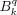
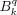
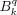

![[eqn]](eqn/stevensoperators1.png) for
.
The associated coefficients

are always real. The high-order part of the spin Hamiltonian written in terms of ESOs is
for
.
The associated coefficients

are always real. The high-order part of the spin Hamiltonian written in terms of ESOs is
In systems with electron spin S>1/2, higher-order terms have to be included in the spin Hamiltonian in order to properly describe EPR spectra. The most common parameters are the second-order zero-field splitting parameters D and E and the fourth-order parameters a and F.
In addition to the terms of D, E, a and F,
a commonly used complete set of high-order operators are the extended Stevens operators (ESO)
for
.
The associated coefficients

are always real. The high-order part of the spin Hamiltonian written in terms of ESOs is
In Easyspin, matrix representations of the extended Stevens operators are provided by the function stev and are used by the simulation functions eigfields, resfields and pepper.
The commonly used second-order zero-field splitting parameters D and E are related to the coefficients by
The associated second-order Hamiltonian terms have the forms
The traditional cubic and axial fourth-order parameters a and F are related to the coefficients.
The associated fourth-order Hamiltonian terms have the forms
(see Abragam/Bleaney, p. 142, 437; Pilbrow, p. 125, 129). The axes x, y, and z are the fourfold symmetry axes of the cubic part of the crystal field.
The following table lists the most common Stevens operators in terms of polynomials in S+, S- and Sz. A more general list of extended Stevens operators (including odd k) can be found in Al'tshuler/Kozyrev. Abragram/Bleaney contains only a partial, but compatible list. Ryabov (1999) has devised a formula for computing Stevens operator polynomials for arbitrary 0<=k and -k<=q<=k.
Here are the most important references for extended Stevens operators
Note that there are typos and mistakes both in Al'tshuler/Kozyrev and in Abragam/Bleaney, as discussed by Rudowicz (2004).